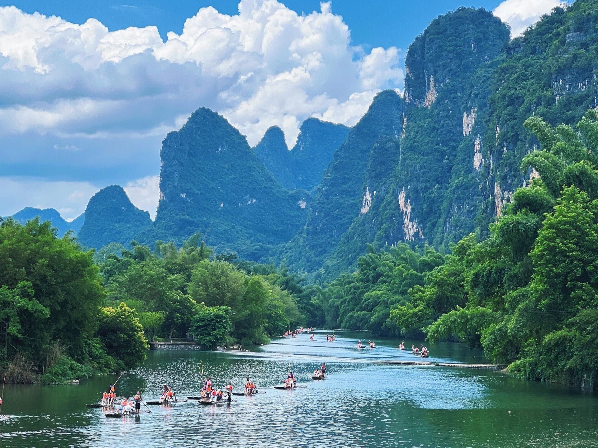

01 / GUANGXI
桂林 · 山水之间
漓江蜿蜒穿过青翠的喀斯特山峰，江面倒映着云影与竹筏。适合乘船、骑行，也适合找一处江边慢慢发呆。
推荐体验：漓江游船 · 遇龙河骑行 · 阳朔西街
EXPLORE THE MAP
从自然奇观到城市日常，挑选一处心动的风景，开启你的下一段旅程。

01 / GUANGXI
漓江蜿蜒穿过青翠的喀斯特山峰，江面倒映着云影与竹筏。适合乘船、骑行，也适合找一处江边慢慢发呆。
推荐体验：漓江游船 · 遇龙河骑行 · 阳朔西街

02 / CHONGQING
重庆既有层层叠叠的立体城市风景，也有奉节县壮阔的长江三峡景色。市区可以感受山城道路、江岸夜景与特色建筑；走进奉节，则能欣赏瞿塘峡一带的雄奇山水。
推荐体验：洪崖洞夜景 · 李子坝观景 · 奉节瞿塘峡

03 / XINJIANG
喀纳斯景区以清澈的湖水、森林、雪山与山谷景观闻名。沿湖步道和观景平台可以欣赏湖面随光线变化的色彩，也能感受宁静开阔的自然环境。
推荐体验：喀纳斯湖观景 · 三湾徒步 · 观鱼台远眺
04 / SHAANXI
古城墙、钟鼓楼与历史遗迹，让这座城市像一本可以边走边读的历史书。
推荐体验：古城墙骑行 · 陕西历史博物馆 · 兵马俑
YOUR NEXT STOP
让一份清晰的行程计划，把想象变成真正的出发。